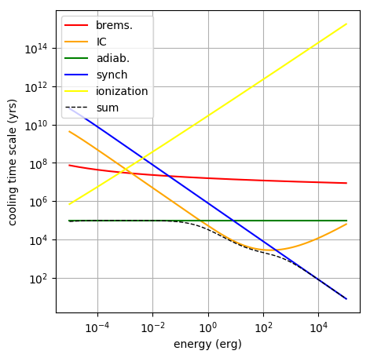

How to View the Time-Scales of the Relevant Cooling Processes
Sometimes it is important to know the cooling time scale of electrons
due to different energy-loss mechanisms.
This information is available through the Particles-class function
GetCoolingTimeScale(), here’s how:
Step 1: create and set up a Particles-object
By default, when creating the Particles class, it is assumed that you want electrons. The following example covers the electron case. Depending on the environment we are setting up, the following losses are available:
- adiabatic losses (if expansion velocity is given)
- synchrotron losses (if magnetic field is given)
- Bremsstrahlung losses (if density of the ISM is given. Assumes proton and 10% Helium!!!)
- Ionization losses (if density of the ISM is given. Assumes protons and 10% Helium!!!)
- Inverse Compton losses (if at least one target radiation field is given)
import gappa as gp
fp = gp.Particles()
# set up particle spectrum with random environmental parameters
fp.AddThermalTargetPhotons(10,10*gp.eV_to_erg)
fp.SetAmbientDensity(1)
fp.SetRadius(1)
fp.SetExpansionVelocity(1e9)
fp.SetBField(5e-6)
fp.SetAge(1e5)
Step 2: Use the GetCoolingTimeScale() function
# extract the cooling time scales at energy points 'e'
e = np.logspace(-5,5,150)
fp.GetCoolingTimeScale(e,"sum")
fp.GetCoolingTimeScale(e,"inverse_compton")
fp.GetCoolingTimeScale(e,"bremsstrahlung")
fp.GetCoolingTimeScale(e,"adiabatic_losses")
fp.GetCoolingTimeScale(e,"synchrotron")
fp.GetCoolingTimeScale(e,"ionization")
This will give you the cooling time scales at t=age. If you are interested
at the cooling time scales at different times, you can get that by specifying
at time t too, e.g.:
fp.GetCoolingTimeScale(e,"synchrotron",t)
This script (NOTE: to be edited!) will create the following plot:

By the way, if you are interested in the energy loss rate, dE/dt [erg/s] instead of the
cooling time scale, you can call the fp.GetEnergyLossRate() function with exactly the same syntax as above.
If you have protons
If you want protons, in the initialization step, you need to add the line:
fp.SetType("protons")
In this case though the only losses that are accounted for are:
- adiabatic losses
- pp cooling (assuming only pp interactions)
- ionization losses (assuming hydrogen and a 10% of helium)
To compute the ionization losses we need to activate them first. This is done via the function fp.SetIonization() (they are not available by default).